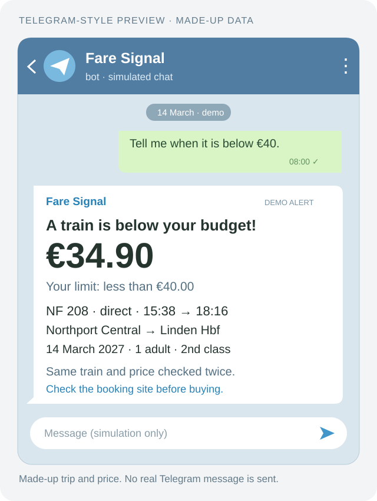

A little messenger
In the real project, BotFather made my Telegram bot. Here, one click makes a pretend one. No key needed.
A LITTLE HELPER FOR A BIG SEARCH.
Imagine a helper looking for a cheaper train ticket.
It checks the price twice. If it is unsure, it waits.
Follow the whole story: timer, price checks, notebook and Telegram.
THE PROBLEM → THE SOLUTION → THE OUTCOME
The fare for the train I was watching kept rising. I wanted a ticket below €40, without checking the booking site all day.
I widened the search to direct trains after 12:30. The original system checked about every two hours, read each price twice and told me on Telegram. Its notebook stopped repeat messages.
I bought a ticket for a later train. Then I switched the watcher off. I made the purchase myself, on the booking site.
This picture uses made-up data, not the fare I paid. The demo below simulates the whole path and sends no real messages.
Read how I built it ↗
A real project, retold with pretend data. The original helper checked real train prices and sent Telegram alerts. I bought a ticket and stopped it. Here, you can play through every step without a bot, a key or a phone.
Read the whole story ↗In the real project, BotFather made my Telegram bot. Here, one click makes a pretend one. No key needed.
A real bot needs you to say hello first. This button acts out that step. It does not open Telegram.
No pretend bot yet. Make one first.
The original timer ran on GitHub, about every two hours. Here, you move a pretend clock with a button.
The watch is off.
All done. The pretend watch is off. Its messages stay here so you can read them. Press Start over to play again.
Make a pretend bot, press Start, then turn the watch on.
THE AFTERNOON LINEUP
Two checks, 20 pretend seconds apart. You do not need to wait that long.
Read A and Read B are made-up prices for the same train, 20 pretend seconds apart. A receipt means my pretend sender answered. It does not mean a person read the message.
| Train | Read A | Read B | What the helper decided | Notebook |
|---|
Run a check to fill this notebook. It stays only while this page is open.
02 / WHY THE HELPER WORKS THIS WAY
I wanted a cheaper train ticket without looking all day. A helper could look for me. But first, it needed rules about when to tell me.
Read the storyTwo tickets can both cost €30 but belong to different trains. Check the train, stations, date and times too.
No price? Two different prices? Wait. Not sure a message arrived? Check what happened before sending it again.
The helper keeps a little notebook. It puts a tick beside a train it already told you about, so it does not tell you twice.
03 / INSIDE THE LITTLE HELPER
JavaScript is the code. The page and the tests use the same rules. You need no extra code packages.
This is pretend. The data is made up. The messages stay here. Nothing checks real train prices or sends real messages.
See how it works